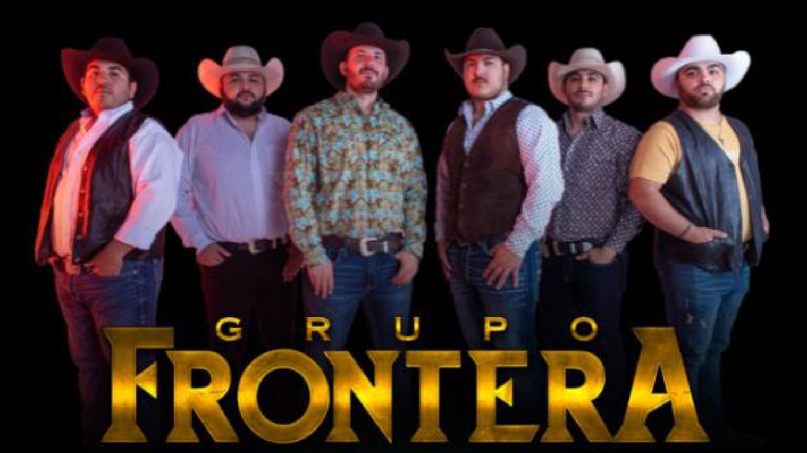

Grupo Frontera is topping music charts in Mexico and the U.S., has taken their music across borders and, with 15 nominations under its belt, could be one of the most celebrated groups on Thursday night during the 2023 Billboard Latin Music Awards.At a time when regional Mexican music is reaching global audiences, Grupo Frontera joins the list of artists of the likes of Peso Pluma, Yahritza y Su Esencia and Fuerza Regida, who in addition to making Mexican fans in the U.S. fall in love with them, are also drawing admirers from people who do not speak or understand Spanish. Born out of the Rio Grande Valley of Texas, right at the southern border with Mexico, this group catapulted to fame thanks to a cover song they uploaded to YouTube in 2022.
Its members — Adelaido Solís III “Payo” (vocalist and bassoquinto), Julián Peña Jr. (percussionist), Carlos Frontera (drummer), Alberto Acosta (guitarist) Carlos Zamora (bass) and Juan Javier Cantú (accordionist and second voice) — started the group years ago and mainly played at local and family events.